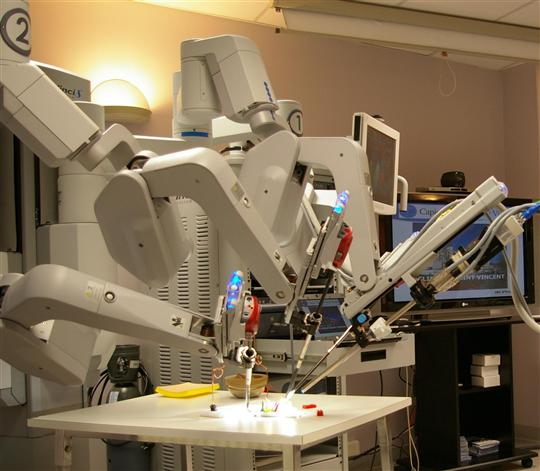

Des micro-robots pour acheminer des médicaments vers le système nerveux
Date : 11 Octobre 2021
Des chercheurs américains ont mis au point des nanotiges alignées magnétiquement dans des capsules d’alginate,
appelées MANiACs. Elles sont capables de libérer des substances dans les tissus du système nerveux.
Le traitement des maladies touchant le système nerveux central peut être particulièrement difficile.
« Donner des médicaments par voie orale ou par intraveineuse, par exemple, pour cibler des cancers ou des maladies neurologiques,
peut toucher d’autres régions du corps ou du système nerveux qui ne sont pas liées à la maladie
La direction de ce micro-robot a été l’un des challenges auxquels ont été confrontés les chercheurs.
Pour y parvenir, ils ont utilisé des champs magnétiques. « Ils ne sont pas influencés par les tissus et semblent être vraiment sûrs

Les tests de ces micros-robots
L’expérience a été concluante : les scientifiques ont réussi à contrôler les micro-robots avec un degré de précision important, et ils ont pu les faire revenir dans certaines zones, pour augmenter la quantité de substance délivrée.